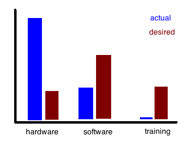
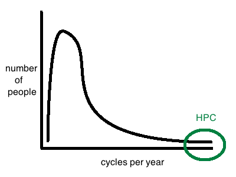
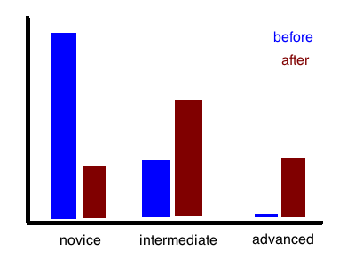

Three Graphs I Would Like to See
I spent part of the weekend chatting with a friend in Cambridge who used to be science editor at The Independent and now edits Scientific Computing World. During those conversations, I realized that there are three graphs I'd really like to see:
-
Ask the managers of high-performance computing centers what fraction of their budget they spent on hardware, software, and training, and what fractions they would like to spend. My prediction is:

-
Measure how much computing power all of the scientists at a university (not just those with HPC accounts) use during a year. My prediction is:

-
Classify all the support requests received by HPC center staff according to technical complexity, and see how that changes after something like a two-day Software Carpentry workshop. My prediction is:

The first tells us how much political interference (i.e., administrators' desire for photo opportunities) skews computing priorities. The second will show the mis-match between where computing money is spent and what most scientists actually do, while the third will show that training doesn't just help scientists directly: it also improves the ROI of highly-skilled support staff.
So, anyone looking for a PhD research topic?